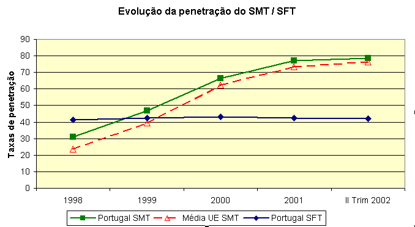
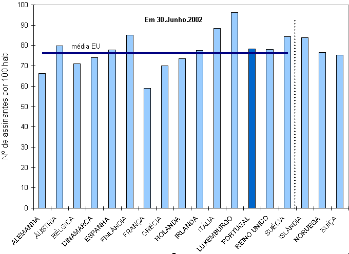

A oferta de serviço móvel de telefone, em Portugal, é variada.
Estão licenciados em Portugal para o exercício do chamado serviço móvel terrestre três operadores, TMN (96), Vodafone (91) e Optimus (93), e para o serviço UMTS quatro operadores, TMN, Vodafone, Optimus e Oniway (95). A PT Comunicações dispõe de uma licença para o serviço de chamadas pessoais.
Segundo a ANACOM, no final do 2º trimestre de 2002, o Serviço Móvel Terrestre atingiu 8120,2 milhares de assinantes, registando um crescimento de cerca de 0,6% face ao trimestre anterior, o que corresponde, em valores absolutos, a cerca de 49 mil novos assinantes. Face aos dados referentes ao trimestre homólogo do ano anterior, aderiram ao serviço cerca de 916 milhares de assinantes nos últimos doze meses, o que representa um acréscimo de cerca de 13%. O número de cartões pré-pagos representa 78,3% do total de cartões activos. Verifica-se assim que Portugal atingiu, no final do 2º trimestre de 2002, um valor de penetração de 78,4 assinantes/100 hab. sendo a média dos países da União Europeia de 75,6.
As figuras seguintes (fonte: ANACOM) mostram a evolução da taxa penetração das redes fixa e móvel em Portugal

e a taxa de penetração em Junho de 2002 nos diversos países europeus
